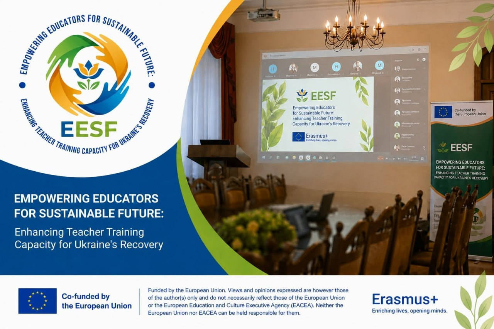

Новини та події

Старт проєкту Erasmus+ CBHE "Розширення можливостей освітян для сталого майбутнього: підвищення потенціалу підготовки вчителів для відновлення України"
20–21 листопада 2025 року відбулася стартова зустріч нового проєкту Erasmus+ CBHE “Empowering Educators for Sustainable Future: Enhancing Teacher Training Capacity for Ukraine's Recovery” (101237551 — EESF — ERASMUS-EDU-2025-CBHE) "Розширення можливостей освітян для сталого майбутнього: підвищення потенціалу підготовки вчителів для відновлення України", координатором/грантхолдером якого є Український державний університет імені Михайла Драгоманова....
Читати більше →
Робоче засідання команди проєкту Erasmus+ CBHE “Empowering Educators for Sustainable Future: Enhancing Teacher Training Capacity for Ukraine's Recovery” (EESF).
Під час зустрічі учасники зосередили увагу на обговоренні стану виконання завдань робочого пакету 2 (WP2), проаналізували досягнуті результати та окреслили подальші кроки реалізації проєкту. ...
Читати більше →
Відбулася перша зустріч консорціуму проєкту Erasmus+ CBHE EESF
У межах реалізації проєкту Erasmus+ CBHE №101237551 EESF «Empowering Educators for Sustainable Future: Enhancing Teacher Training Capacity for Ukraine’s Recovery» відбулася перша зустріч консорціуму партнерських організацій. ...
Читати більше →
🌿 Міжнародний навчальний візит партнерів проєкту Erasmus+ CBHE EESF
З 29 червня по 4 липня 2026 року в Кракові та Закопаному (Польща) відбувся міжнародний навчальний візит партнерів проєкту Erasmus+ KA2. CBHE №101237551 EESF «Empowering Educators for Sustainable Future: Enhancing Teacher Training Capacity for Ukraine’s Recovery», організований Університетом Комісії народної освіти в Кракові (University of the National Education Commission, UKEN, Poland). ...
Читати більше →